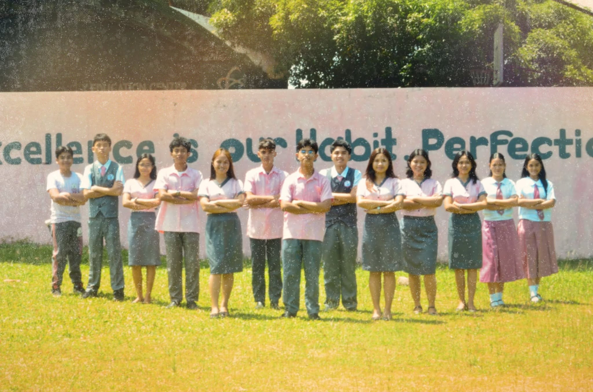

🍎 Bayawanong Himsog Program
BCSTEC promotes healthy learners through the Bayawanong Himsog Program. The initiative focuses on improving the nutritional status and overall health of students through regular monitoring and wellness activities.
Program Highlights
- Nutrition Monitoring
- Health Assessment
- Wellness Promotion
- Healthy Lifestyle Campaigns

🥣 School-Based Feeding Program
The School-Based Feeding Program provides nutritious meals to identified learners to improve their health, attendance, and classroom participation. Through this initiative, the number of undernourished learners significantly decreased while the number of learners with normal nutritional status increased.
Program Results
- Undernourished learners reduced from 31 to 4
- 95.60% of learners achieved normal nutritional status
- Improved attendance and classroom participation

💧 Water Breaks & WINS Program
BCSTEC promotes healthy habits through the Water Breaks initiative and the Water, Sanitation, and Hygiene in Schools (WINS) Program. These programs encourage proper hydration, good hygiene practices, and the use of safe drinking water, creating a healthier learning environment for all learners.
Program Highlights
- Regular Water Break Schedule
- Clean and Safe Drinking Water
- Handwashing Facilities
- Proper Hygiene Practices
- Healthy School Environment

💙 PEACE Program & Guidance Office
BCSTEC recognizes the importance of learners' mental, social, and emotional well-being. Through the PEACE Program and the Guidance Office, students receive counseling, guidance services, and activities that promote resilience, positive behavior, and holistic development.
Services Offered
- Guidance and Counseling
- PEACE Program Activities
- Stress Management Room
- Mental Health Awareness
- Student Support Services

👥 SSLG & Student Leadership
The Supreme Secondary Learner Government (SSLG) continues to develop responsible, service-oriented, and values-driven student leaders through leadership programs, school activities, and community engagement.
Leadership Activities
- Leadership Training
- Community Outreach Programs
- Student-Led Activities
- School Governance Participation
- Values Formation Programs

🙏 Grade 10 & Grade 12 Recollections
BCSTEC provides recollection activities for Grade 10 and Grade 12 learners to strengthen their faith, character, and personal reflection. These activities encourage learners to develop positive values, responsibility, and meaningful relationships with others.
Objectives
- Personal Reflection
- Values Formation
- Spiritual Growth
- Character Development

🏥 School Clinic & Health Services
The School Clinic provides immediate healthcare services and regular health monitoring for learners, teachers, and personnel. Services include blood pressure monitoring, blood glucose testing, first aid, and the availability of essential medicines and clinic supplies.
Health Services
- Blood Pressure Monitoring
- Random Blood Glucose Testing
- First Aid Services
- Essential Medicines
- Health Monitoring